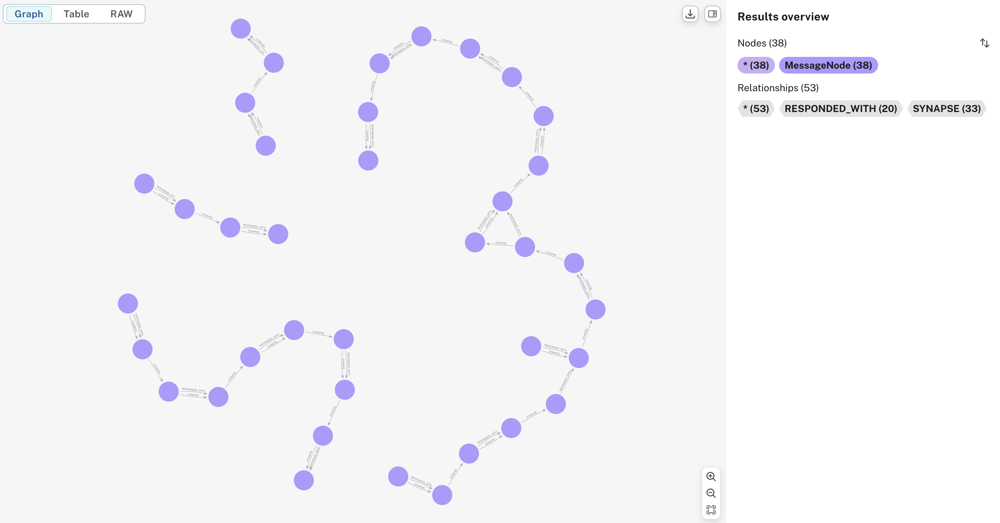

Introduction
Reservoir is your helpful memory for AI conversations. It sits between your app and any OpenAI-compatible Chat Completions API, making it easier to have rich, ongoing conversations with your favorite language models from multiple providers.
What is Reservoir?
When you use any OpenAI-compatible Chat Completions API, you need to send the full conversation history with every request. For example:
[
{"role": "user", "content": "What is 1 + 1?"},
{"role": "assistant", "content": "2"},
{"role": "user", "content": "What is the answer times 3?"}
]
If you only send the last question, the model won't know what "the answer" refers to. You have to keep track of all previous messages and include them every time.
This can get tricky as conversations grow!
Reservoir acts as a smart proxy: it automatically stores your chat history and inserts the right context into each request. You just talk to any OpenAI-compatible API as usual and Reservoir handles the memory, context, and even finds other relevant messages from your past conversations to help the model give better answers.
Why Use Reservoir?
- Own your AI history: All your conversations are stored locally, never in the cloud.
- Search and recall: Instantly find previous chats, ideas, or code snippets from your AI interactions.
- Enrich context: Automatically inject relevant history into new prompts for more coherent, personalized responses.
- Visualize conversations: See how your discussions branch and connect over time.
- Stay private: Your data never leaves your device.
Supported Providers
Supported Providers:
- OpenAI (GPT-4, GPT-4o, GPT-3.5-turbo, etc.)
- Ollama (llama3.2, gemma3, and any local models)
- Mistral AI (mistral-large-2402, etc.)
- Google Gemini (gemini-2.0-flash, etc.)
- Any OpenAI-compatible API endpoint
Key Benefits
- No more manual history management: Reservoir automatically tracks conversation context
- Automatic context enrichment: Relevant past conversations are injected into new requests
- Your data stays private and local: Everything is stored on your device
- Multi-app support: Use one Reservoir instance across multiple applications
- Flexible organization: Partition conversations by app, project, or any context you choose
How It Works
Reservoir intercepts your API calls, enriches them with relevant history, manages token limits, and then forwards them to the actual LLM service. Every interaction is stored on your device, building a personal knowledge base that never leaves your network.
A single thread of conversation can span multiple models without losing context, allowing you to seamlessly switch between different AI providers while maintaining the flow of your discussion.

Use Cases
- Chat Applications: Add memory to any chat interface
- Development Tools: Keep context across coding sessions
- Research: Build a personal knowledge base from AI interactions
- Multi-Provider Workflows: Switch between different AI models seamlessly
- Team Collaboration: Share conversation contexts across team members
Ready to get started? Check out the Quick Start guide!
Getting Started
Welcome to Reservoir! This section will guide you through everything you need to get up and running with Reservoir quickly and efficiently.
What You'll Learn
In this section, you'll learn how to:
- Install Reservoir - Set up Reservoir on your system with all prerequisites
- Quick Start - Get Reservoir running in minutes with basic configuration
- Your First Chat - Send your first AI conversation through Reservoir
Prerequisites
Before you begin, make sure you have:
- Neo4j database running (local or remote)
- Rust toolchain installed (for building from source)
- API keys for your preferred AI providers (OpenAI, Mistral, etc.)
Getting Help
If you run into any issues during setup, check out our Help & Support section for troubleshooting guides and frequently asked questions.
Let's get started! 🚀
Installation
This guide will walk you through installing and setting up Reservoir on your system.
Prerequisites
Before installing Reservoir, make sure you have the following dependencies installed:
Required Dependencies
-
Rust and Cargo (latest stable version)
curl --proto '=https' --tlsv1.2 -sSf https://sh.rustup.rs | sh source ~/.cargo/env -
Neo4j Database (version 4.4 or later)
Option A: Using Docker (Recommended)
docker run \ --name neo4j \ -p7474:7474 -p7687:7687 \ -d \ -v $HOME/neo4j/data:/data \ -v $HOME/neo4j/logs:/logs \ -v $HOME/neo4j/import:/var/lib/neo4j/import \ -v $HOME/neo4j/plugins:/plugins \ --env NEO4J_AUTH=neo4j/password \ neo4j:latestOption B: Native Installation
- Download from Neo4j Download Center
- Follow the installation instructions for your operating system
Optional Dependencies
-
mdBook (for building documentation)
cargo install mdbook -
Hurl (for running API tests)
# macOS brew install hurl # Linux curl --location --remote-name https://github.com/Orange-OpenSource/hurl/releases/latest/download/hurl_amd64.deb sudo dpkg -i hurl_amd64.deb
Installing Reservoir
From Source (Recommended)
-
Clone the repository
git clone https://github.com/divanvisagie/reservoir.git cd reservoir -
Build the project
cargo build --release -
Install the binary (optional)
cargo install --path .
Using Cargo Install
Once Reservoir is published to crates.io, you'll be able to install it directly:
cargo install reservoir
Configuration
Environment Variables
Create an .env file in your project directory or set these environment variables:
# Neo4j Configuration
NEO4J_URI=bolt://localhost:7687
NEO4J_USERNAME=neo4j
NEO4J_PASSWORD=password
# Server Configuration
RESERVOIR_PORT=3017
RESERVOIR_HOST=127.0.0.1
# API Keys (set as needed)
OPENAI_API_KEY=your-openai-key-here
MISTRAL_API_KEY=your-mistral-key-here
GEMINI_API_KEY=your-gemini-key-here
# Custom Provider Endpoints (optional)
RSV_OPENAI_BASE_URL=https://api.openai.com/v1/chat/completions
RSV_OLLAMA_BASE_URL=http://localhost:11434/v1/chat/completions
RSV_MISTRAL_BASE_URL=https://api.mistral.ai/v1/chat/completions
Using direnv (Recommended)
If you're using direnv, you can create a .envrc file:
# .envrc
export NEO4J_URI=bolt://localhost:7687
export NEO4J_USERNAME=neo4j
export NEO4J_PASSWORD=password
export RESERVOIR_PORT=3017
export OPENAI_API_KEY=your-openai-key-here
Then activate it:
direnv allow
Verification
1. Check Neo4j Connection
Make sure Neo4j is running and accessible:
# If using Docker
docker ps | grep neo4j
# Test connection (replace with your credentials)
curl -u neo4j:password http://localhost:7474/db/data/
2. Start Reservoir
# From the repository directory
cargo run -- start
# Or if you installed the binary
reservoir start
You should see output similar to:
2024-01-01T12:00:00Z [INFO] Initializing vector index in Neo4j...
2024-01-01T12:00:01Z [INFO] Server starting on http://127.0.0.1:3017
3. Test the Installation
Run the included tests to verify everything is working:
# Test all endpoints
./hurl/test.sh
# Or test individual endpoints
hurl --variable USER="$USER" --variable OPENAI_API_KEY="$OPENAI_API_KEY" hurl/chat_completion.hurl
4. Simple API Test
Test with a basic curl request:
curl "http://127.0.0.1:3017/partition/$USER/instance/test/v1/chat/completions" \
-H "Content-Type: application/json" \
-H "Authorization: Bearer $OPENAI_API_KEY" \
-d '{
"model": "gpt-4",
"messages": [
{
"role": "user",
"content": "Hello, Reservoir!"
}
]
}'
Troubleshooting Installation
Common Issues
Neo4j Connection Failed
- Verify Neo4j is running:
docker psor check your local Neo4j service - Check credentials in your environment variables
- Ensure ports 7474 and 7687 are not blocked
Cargo Build Fails
- Update Rust:
rustup update - Clear cargo cache:
cargo clean - Check for system dependency issues
Port Already in Use
- Change the port:
export RESERVOIR_PORT=3018 - Kill existing processes:
lsof -ti:3017 | xargs kill
API Key Issues
- Verify your API keys are set correctly:
echo $OPENAI_API_KEY - Check for extra whitespace or quotes in environment variables
Getting Help
If you encounter issues:
- Check the Troubleshooting section
- Review the server logs for detailed error messages
- Verify all prerequisites are properly installed
- Test with the simplest possible configuration first
Next Steps
Once Reservoir is installed and running:
- Follow the Getting Started guide
- Try the Chat Gipitty Integration
- Explore the API Reference
- Check out Usage Examples
Quick Start
This guide will get you up and running with Reservoir in just a few minutes.
Before You Begin
Make sure you have:
- Reservoir installed (see Installation)
- Neo4j running locally
- At least one API key configured (OpenAI, Mistral, or Gemini)
Step 1: Start the Server
Open a terminal and start Reservoir:
cargo run -- start
You should see:
[INFO] Initializing vector index in Neo4j for semantic search
[INFO] Server starting on http://127.0.0.1:3017
Keep this terminal open - Reservoir is now running and ready to handle requests.
Step 2: Your First Chat Request
Open a new terminal and send your first chat request:
curl "http://127.0.0.1:3017/partition/$USER/instance/quickstart/v1/chat/completions" \
-H "Content-Type: application/json" \
-H "Authorization: Bearer $OPENAI_API_KEY" \
-d '{
"model": "gpt-4",
"messages": [
{
"role": "user",
"content": "Hello! What is Reservoir?"
}
]
}'
The response will look like a standard OpenAI API response, but Reservoir has:
- Stored your message and the AI's response
- Tagged them with your username and "quickstart" instance
- Made them available for future context enrichment
Step 3: See the Memory in Action
Send a follow-up question that references your previous conversation:
curl "http://127.0.0.1:3017/partition/$USER/instance/quickstart/v1/chat/completions" \
-H "Content-Type: application/json" \
-H "Authorization: Bearer $OPENAI_API_KEY" \
-d '{
"model": "gpt-4",
"messages": [
{
"role": "user",
"content": "Can you elaborate on what you just told me?"
}
]
}'
Notice how the AI understands "what you just told me" - that's Reservoir automatically injecting the previous conversation context!
Step 4: View Your Conversation History
Check what Reservoir has stored:
cargo run -- view 5 --partition "$USER" --instance quickstart
You'll see output like:
2024-01-01T12:00:00+00:00 [abc123] user: Hello! What is Reservoir?
2024-01-01T12:00:01+00:00 [abc123] assistant: Reservoir is a memory system for AI conversations...
2024-01-01T12:01:00+00:00 [def456] user: Can you elaborate on what you just told me?
2024-01-01T12:01:01+00:00 [def456] assistant: Certainly! Let me expand on Reservoir's capabilities...
Step 5: Try Different Models
Reservoir supports multiple providers. Try Ollama (no API key needed):
curl "http://127.0.0.1:3017/partition/$USER/instance/quickstart/v1/chat/completions" \
-H "Content-Type: application/json" \
-d '{
"model": "llama3.2",
"messages": [
{
"role": "user",
"content": "What did we discuss earlier about Reservoir?"
}
]
}'
Even though you're using a different model (Ollama instead of OpenAI), Reservoir still provides the conversation context!
Understanding the URL Structure
The Reservoir API endpoint follows this pattern:
http://localhost:3017/partition/{partition}/instance/{instance}/v1/chat/completions
- Partition: Organizes conversations (typically your username)
- Instance: Sub-organizes within a partition (like "quickstart", "work", "personal")
- This keeps different contexts separate while allowing context sharing within each space
What Just Happened?
- Storage: Every message (yours and the AI's) was stored in Neo4j
- Context Enrichment: Reservoir automatically found relevant past messages and included them in requests
- Multi-Provider: You used both OpenAI and Ollama with the same conversation history
- Organization: Your conversations were organized by partition and instance
Next Steps
Now that you've seen Reservoir in action, explore:
- Chat Gipitty Integration - Add memory to your existing cgip setup
- Python Integration - Use with the OpenAI Python library
- API Reference - Detailed API documentation
- Features - Learn about advanced features
Quick Reference
Common Commands
# Start the server
cargo run -- start
# View recent messages
cargo run -- view 10 --partition $USER --instance myapp
# Export conversations
cargo run -- export > backup.json
# Import conversations
cargo run -- import backup.json
# Search conversations
cargo run -- search "your query" --partition $USER
Environment Variables
export RESERVOIR_PORT=3017 # Server port
export NEO4J_URI=bolt://localhost:7687 # Neo4j connection
export OPENAI_API_KEY=your-key-here # OpenAI API key
export MISTRAL_API_KEY=your-key-here # Mistral API key
Ready to dive deeper? Check out the Usage Examples or learn about Chat Gipitty Integration!
Your First Chat
This guide will walk you through sending your first message through Reservoir and demonstrate how its memory and context features work.
Prerequisites
Before starting, make sure you have:
- ✅ Reservoir server running (
cargo run -- start) - ✅ Neo4j database accessible
- ✅ API keys set up (if using cloud providers)
Example 1: Testing with Ollama (Local)
Let's start with a local Ollama model since it doesn't require API keys:
Step 1: Send your first message
curl "http://127.0.0.1:3017/partition/$USER/instance/first-chat/v1/chat/completions" \
-H "Content-Type: application/json" \
-d '{
"model": "gemma3",
"messages": [
{
"role": "user",
"content": "Hello! My name is Alice and I love programming in Python."
}
]
}'
Step 2: Ask a follow-up question
Now ask something that requires memory of the previous conversation:
curl "http://127.0.0.1:3017/partition/$USER/instance/first-chat/v1/chat/completions" \
-H "Content-Type: application/json" \
-d '{
"model": "gemma3",
"messages": [
{
"role": "user",
"content": "What programming language do I like?"
}
]
}'
🎉 Magic! The AI will remember that you like Python, even though you didn't include the previous conversation in your request. Reservoir handled that automatically!
Step 3: Continue the conversation
curl "http://127.0.0.1:3017/partition/$USER/instance/first-chat/v1/chat/completions" \
-H "Content-Type: application/json" \
-d '{
"model": "gemma3",
"messages": [
{
"role": "user",
"content": "Can you suggest a Python project for someone at my skill level?"
}
]
}'
The AI will make suggestions based on knowing you're Alice who loves Python programming!
Example 2: Using OpenAI Models
If you have an OpenAI API key set up:
Step 1: Introduction with GPT-4
curl "http://127.0.0.1:3017/partition/$USER/instance/gpt-chat/v1/chat/completions" \
-H "Content-Type: application/json" \
-H "Authorization: Bearer $OPENAI_API_KEY" \
-d '{
"model": "gpt-4",
"messages": [
{
"role": "user",
"content": "Hi! I am working on a machine learning project about image classification."
}
]
}'
Step 2: Ask for specific help
curl "http://127.0.0.1:3017/partition/$USER/instance/gpt-chat/v1/chat/completions" \
-H "Content-Type: application/json" \
-H "Authorization: Bearer $OPENAI_API_KEY" \
-d '{
"model": "gpt-4",
"messages": [
{
"role": "user",
"content": "What neural network architecture would you recommend for my project?"
}
]
}'
GPT-4 will remember you're working on image classification and provide relevant recommendations!
Example 3: Cross-Model Conversations
One of Reservoir's unique features is that conversation context can span multiple models:
Step 1: Start with Ollama
curl "http://127.0.0.1:3017/partition/$USER/instance/cross-model/v1/chat/completions" \
-H "Content-Type: application/json" \
-d '{
"model": "gemma3",
"messages": [
{
"role": "user",
"content": "I am learning about quantum computing basics."
}
]
}'
Step 2: Switch to GPT-4
curl "http://127.0.0.1:3017/partition/$USER/instance/cross-model/v1/chat/completions" \
-H "Content-Type: application/json" \
-H "Authorization: Bearer $OPENAI_API_KEY" \
-d '{
"model": "gpt-4",
"messages": [
{
"role": "user",
"content": "Can you explain quantum superposition in more detail?"
}
]
}'
GPT-4 will know you're learning quantum computing and provide an explanation appropriate to your level!
Understanding the Results
What Reservoir Does Behind the Scenes
When you send a message, Reservoir:
- Stores your message in Neo4j with embeddings
- Searches for relevant context from previous conversations
- Injects relevant history into your request automatically
- Forwards the enriched request to the AI provider
- Stores the AI's response for future context
Viewing Your Conversation History
You can see your stored conversations using the CLI:
# View last 5 messages in the first-chat instance
cargo run -- view 5 --partition $USER --instance first-chat
Sample output:
2025-06-21T09:10:01+00:00 [abc123] user: Hello! My name is Alice and I love programming in Python.
2025-06-21T09:10:02+00:00 [abc123] assistant: Hello Alice! It's great to meet a fellow Python enthusiast...
2025-06-21T09:11:10+00:00 [def456] user: What programming language do I like?
2025-06-21T09:11:12+00:00 [def456] assistant: You mentioned that you love programming in Python!
2025-06-21T09:12:00+00:00 [ghi789] user: Can you suggest a Python project for someone at my skill level?
Testing Different Scenarios
Scenario 1: Different Partitions
Try organizing conversations by topic using different partitions:
# Work-related conversations
curl "http://127.0.0.1:3017/partition/work/instance/coding/v1/chat/completions" \
-H "Content-Type: application/json" \
-d '{"model": "gemma3", "messages": [{"role": "user", "content": "I need help debugging a React component."}]}'
# Personal learning
curl "http://127.0.0.1:3017/partition/personal/instance/learning/v1/chat/completions" \
-H "Content-Type: application/json" \
-d '{"model": "gemma3", "messages": [{"role": "user", "content": "I want to learn guitar playing."}]}'
Each partition maintains separate conversation history!
Scenario 2: Web Search Integration
If using a model that supports web search:
curl "http://127.0.0.1:3017/partition/$USER/instance/research/v1/chat/completions" \
-H "Content-Type: application/json" \
-H "Authorization: Bearer $OPENAI_API_KEY" \
-d '{
"model": "gpt-4o-search-preview",
"messages": [{"role": "user", "content": "What are the latest trends in AI development?"}],
"web_search_options": {"enabled": true, "max_results": 5}
}'
Common Issues and Solutions
Server Not Responding
# Check if Reservoir is running
curl http://127.0.0.1:3017/health
# If not running, start it
cargo run -- start
"Model not found" Error
- For Ollama models: Make sure Ollama is running and the model is installed
- For cloud models: Check your API keys are set correctly
Empty Responses
- Check your internet connection for cloud providers
- Verify the model name is spelled correctly
- Ensure your API key has sufficient credits
Next Steps
Now that you've sent your first chat, explore these features:
- Python Integration - Use Reservoir from Python code
- Partitioning & Organization - Organize your conversations
- Chat Gipitty Integration - Add memory to your existing chat tools
- API Reference - Learn about advanced features
Congratulations! 🎉 You've successfully used Reservoir to have a conversation with persistent memory. The AI now remembers everything from your conversation and can reference it in future chats!
Usage & Integration
Reservoir is designed to work seamlessly with your existing AI workflows and tools. This section covers various ways to integrate and use Reservoir in your projects.
Integration Options
Chat Applications
- Chat Gipitty Integration - Add persistent memory to your Chat Gipitty conversations
- Python with OpenAI Library - Use Reservoir with the popular OpenAI Python client
Direct API Usage
- Curl Examples - Command-line examples for testing and scripting
- Ollama Integration - Use Reservoir with local Ollama models
Common Use Cases
- Multi-session conversations - Maintain context across different chat sessions
- Cross-application memory - Share conversation history between different tools
- Local AI workflows - Keep conversations private while using local models
- Research and development - Build applications that learn from past interactions
Choosing Your Integration
- New to AI development? Start with Chat Gipitty Integration
- Python developer? Check out Python with OpenAI Library
- Command-line user? Try the Curl Examples
- Privacy-focused? Use Ollama Integration for fully local conversations
Each integration method maintains the same core benefits: persistent memory, context enrichment, and seamless AI conversations.
Chat Gipitty Integration
Reservoir was originally designed as a memory system for Chat Gipitty. This integration gives your cgip conversations persistent memory, context awareness, and the ability to search through your AI interaction history.
What You Get
When you integrate Reservoir with Chat Gipitty, you get:
- Persistent Memory: Your conversations are remembered across sessions
- Semantic Search: Find relevant past discussions automatically
- Context Enrichment: Each response is informed by your conversation history
- Multi-Model Support: Switch between different AI providers while maintaining context
Setup
Prerequisites
- Chat Gipitty installed and working
- Reservoir installed and running (see Installation)
- Your shell configured (bash or zsh)
Installation
Add this function to your ~/.bashrc or ~/.zshrc file:
function contextual_cgip_with_ingest() {
local user_query="$1"
# Validate input
if [ -z "$user_query" ]; then
echo "Usage: contextual_cgip_with_ingest 'Your question goes here'" >&2
return 1
fi
# Ingest the user's query into Reservoir
echo "$user_query" | reservoir ingest
# Generate dynamic system prompt with context
local system_prompt_content=$(
echo "the following is info from semantic search based on your query:"
reservoir search "$user_query" --semantic --link
echo "the following is recent history:"
reservoir view 10
)
# Call cgip with enriched context
local assistant_response=$(cgip "${user_query}" --system-prompt="${system_prompt_content}")
# Store the assistant's response
echo "$assistant_response" | reservoir ingest --role assistant
# Display the response
echo "$assistant_response"
}
# Create a convenient alias
alias gpty='contextual_cgip_with_ingest'
After adding this to your shell configuration, reload it:
# For bash
source ~/.bashrc
# For zsh
source ~/.zshrc
Usage
Basic Usage
Use the function directly:
contextual_cgip_with_ingest "Explain quantum computing in simple terms"
Or use the convenient alias:
gpty "What is machine learning?"
Follow-up Questions
The magic happens with follow-up questions:
gpty "Explain neural networks"
# ... AI responds with explanation ...
gpty "How do they relate to what we discussed about machine learning earlier?"
# ... AI responds with context from the previous conversation ...
Different Topics
Start a new topic, and Reservoir will find relevant context:
gpty "I'm learning Rust programming"
# ... later in a different session ...
gpty "Show me some advanced Rust patterns"
# Reservoir will remember you're learning Rust and provide appropriate context
How It Works
Here's what happens when you use the integrated function:
- Query Ingestion: Your question is stored in Reservoir
- Context Gathering: Reservoir searches for:
- Semantically similar past conversations
- Recent conversation history
- Context Injection: This context is provided to cgip as a system prompt
- Enhanced Response: cgip responds with awareness of your history
- Response Storage: The AI's response is stored for future context
Advanced Configuration
Custom Search Parameters
You can modify the function to customize how context is gathered:
function contextual_cgip_with_ingest() {
local user_query="$1"
if [ -z "$user_query" ]; then
echo "Usage: contextual_cgip_with_ingest 'Your question goes here'" >&2
return 1
fi
echo "$user_query" | reservoir ingest
# Customize these parameters
local system_prompt_content=$(
echo "=== Relevant Context ==="
reservoir search "$user_query" --semantic --link --limit 5
echo ""
echo "=== Recent History ==="
reservoir view 15 --partition "$USER" --instance "cgip"
)
local assistant_response=$(cgip "${user_query}" --system-prompt="${system_prompt_content}")
echo "$assistant_response" | reservoir ingest --role assistant
echo "$assistant_response"
}
Partitioned Conversations
Organize your conversations by topic or project:
function gpty_work() {
local user_query="$1"
if [ -z "$user_query" ]; then
echo "Usage: gpty_work 'Your work-related question'" >&2
return 1
fi
echo "$user_query" | reservoir ingest --partition "$USER" --instance "work"
local system_prompt_content=$(
echo "Context from work conversations:"
reservoir search "$user_query" --semantic --partition "$USER" --instance "work"
echo "Recent work discussion:"
reservoir view 10 --partition "$USER" --instance "work"
)
local assistant_response=$(cgip "${user_query}" --system-prompt="${system_prompt_content}")
echo "$assistant_response" | reservoir ingest --role assistant --partition "$USER" --instance "work"
echo "$assistant_response"
}
function gpty_personal() {
# Similar function for personal conversations
# ... implement similarly with --instance "personal"
}
Model Selection
Use different models while maintaining context:
function gpty_creative() {
local user_query="$1"
echo "$user_query" | reservoir ingest
local system_prompt_content=$(
reservoir search "$user_query" --semantic --link
reservoir view 5
)
# Use a creative model via cgip configuration
local assistant_response=$(cgip "${user_query}" --system-prompt="${system_prompt_content}" --model gpt-4)
echo "$assistant_response" | reservoir ingest --role assistant
echo "$assistant_response"
}
Benefits of This Integration
Continuous Learning
- Your AI assistant learns from every interaction
- Context builds up over time, making responses more personalized
- No need to re-explain your projects or preferences
Cross-Session Memory
- Resume conversations from days or weeks ago
- Reference past decisions and discussions
- Build on previous explanations and examples
Semantic Understanding
- Ask "What did we discuss about X?" and get relevant results
- Similar topics are automatically connected
- Context is found even if you use different wording
Privacy
- All your conversation history stays local
- No data sent to external services beyond the AI API calls
- You control your data completely
Troubleshooting
Function Not Found
Make sure you've sourced your shell configuration:
source ~/.bashrc # or ~/.zshrc
No Context Being Added
Check that Reservoir is running:
# Should show Reservoir process
ps aux | grep reservoir
# Start if not running
cargo run -- start
Empty Search Results
Build up some conversation history first:
gpty "Tell me about artificial intelligence"
gpty "What are neural networks?"
gpty "How does machine learning work?"
# Now try a search
gpty "What did we discuss about AI?"
Permission Issues
Make sure the function has access to reservoir commands:
# Test individual commands
echo "test" | reservoir ingest
reservoir view 5
reservoir search "test"
Next Steps
- Explore API Reference to understand Reservoir's capabilities
- Learn about Partitioning to organize conversations
- Check out Python Integration for programmatic access
- See Troubleshooting if you encounter issues
The Chat Gipitty integration transforms your AI interactions from isolated conversations into a connected, searchable knowledge base that grows smarter with every interaction.
Python Integration
Reservoir works seamlessly with the popular OpenAI Python library. You simply point the client to your Reservoir instance instead of directly to OpenAI, and Reservoir handles all the memory and context management automatically.
Setup
First, install the OpenAI Python library if you haven't already:
pip install openai
Basic Configuration
import os
from openai import OpenAI
INSTANCE = "my-application"
PARTITION = os.getenv("USER")
RESERVOIR_PORT = os.getenv('RESERVOIR_PORT', '3017')
RESERVOIR_BASE_URL = f"http://localhost:{RESERVOIR_PORT}/v1/partition/{PARTITION}/instance/{INSTANCE}"
OpenAI Models
Basic Usage with OpenAI
import os
from openai import OpenAI
INSTANCE = "my-application"
PARTITION = os.getenv("USER")
RESERVOIR_PORT = os.getenv('RESERVOIR_PORT', '3017')
RESERVOIR_BASE_URL = f"http://localhost:{RESERVOIR_PORT}/v1/partition/{PARTITION}/instance/{INSTANCE}"
client = OpenAI(
base_url=RESERVOIR_BASE_URL,
api_key=os.environ.get("OPENAI_API_KEY")
)
completion = client.chat.completions.create(
model="gpt-4",
messages=[
{
"role": "user",
"content": "Write a one-sentence bedtime story about a curious robot."
}
]
)
print(completion.choices[0].message.content)
With Web Search Options
For models that support web search (like gpt-4o-search-preview), you can enable web search capabilities:
completion = client.chat.completions.create(
model="gpt-4o-search-preview",
messages=[
{
"role": "user",
"content": "What are the latest trends in machine learning?"
}
],
extra_body={
"web_search_options": {
"enabled": True,
"max_results": 5
}
}
)
Ollama Models (Local)
Using Ollama (No API Key Required)
import os
from openai import OpenAI
INSTANCE = "my-application"
PARTITION = os.getenv("USER")
RESERVOIR_PORT = os.getenv('RESERVOIR_PORT', '3017')
RESERVOIR_BASE_URL = f"http://localhost:{RESERVOIR_PORT}/v1/partition/{PARTITION}/instance/{INSTANCE}"
client = OpenAI(
base_url=RESERVOIR_BASE_URL,
api_key="not-needed-for-ollama" # Ollama doesn't require API keys
)
completion = client.chat.completions.create(
model="llama3.2", # or "gemma3", or any Ollama model
messages=[
{
"role": "user",
"content": "Explain the concept of recursion with a simple example."
}
]
)
print(completion.choices[0].message.content)
Supported Models
Reservoir automatically routes requests to the appropriate provider based on the model name:
| Model | Provider | API Key Required |
|---|---|---|
gpt-4, gpt-4o, gpt-4o-mini, gpt-3.5-turbo | OpenAI | Yes (OPENAI_API_KEY) |
gpt-4o-search-preview | OpenAI | Yes (OPENAI_API_KEY) |
llama3.2, gemma3, or any custom name | Ollama | No |
mistral-large-2402 | Mistral | Yes (MISTRAL_API_KEY) |
gemini-2.0-flash, gemini-2.5-flash-preview-05-20 | Yes (GEMINI_API_KEY) |
Note: Any model name not explicitly configured will default to using Ollama.
Environment Variables
You can customize provider endpoints and set API keys using environment variables:
import os
# Set environment variables (or use .env file)
os.environ['OPENAI_API_KEY'] = 'your-openai-key'
os.environ['MISTRAL_API_KEY'] = 'your-mistral-key'
os.environ['GEMINI_API_KEY'] = 'your-gemini-key'
# Custom provider endpoints (optional)
os.environ['RSV_OPENAI_BASE_URL'] = 'https://api.openai.com/v1/chat/completions'
os.environ['RSV_OLLAMA_BASE_URL'] = 'http://localhost:11434/v1/chat/completions'
os.environ['RSV_MISTRAL_BASE_URL'] = 'https://api.mistral.ai/v1/chat/completions'
Complete Example
Here's a complete example that demonstrates Reservoir's memory capabilities:
import os
from openai import OpenAI
def setup_reservoir_client():
"""Setup Reservoir client with proper configuration"""
instance = "chat-example"
partition = os.getenv("USER", "default")
port = os.getenv('RESERVOIR_PORT', '3017')
base_url = f"http://localhost:{port}/v1/partition/{partition}/instance/{instance}"
return OpenAI(
base_url=base_url,
api_key=os.environ.get("OPENAI_API_KEY", "not-needed-for-ollama")
)
def chat_with_memory(message, model="gpt-4"):
"""Send a message through Reservoir with automatic memory"""
client = setup_reservoir_client()
completion = client.chat.completions.create(
model=model,
messages=[
{
"role": "user",
"content": message
}
]
)
return completion.choices[0].message.content
# Example conversation that builds context
if __name__ == "__main__":
# First message
response1 = chat_with_memory("My name is Alice and I love Python programming.")
print("Assistant:", response1)
# Second message - Reservoir will automatically include context
response2 = chat_with_memory("What programming language do I like?")
print("Assistant:", response2) # Will know you like Python!
# Third message - Even more context
response3 = chat_with_memory("Can you suggest a project for me?")
print("Assistant:", response3) # Will suggest Python projects for Alice!
Benefits of Using Reservoir
When you use Reservoir with the OpenAI library, you get:
- Automatic Context: Previous conversations are automatically included
- Cross-Session Memory: Conversations persist across different Python sessions
- Smart Token Management: Reservoir handles token limits automatically
- Multi-Provider Support: Switch between different AI providers seamlessly
- Local Storage: All your conversation data stays on your device
Next Steps
- Learn about Partitioning & Organization to organize your conversations
- Check out Token Management to understand how Reservoir handles context limits
- Explore the API Reference for more advanced usage patterns
Curl Examples
This page provides comprehensive examples of using Reservoir with curl commands. These examples are perfect for testing, scripting, or understanding the API structure.
Basic URL Structure
Instead of calling the provider directly, you call Reservoir with this URL pattern:
- Direct Provider:
https://api.openai.com/v1/chat/completions - Through Reservoir:
http://127.0.0.1:3017/partition/$USER/instance/reservoir/v1/chat/completions
Where:
$USERis your system username (acts as the partition)reservoiris the instance name (you can use any name)
OpenAI Models
Basic GPT-4 Example
curl "http://127.0.0.1:3017/partition/$USER/instance/reservoir/v1/chat/completions" \
-H "Content-Type: application/json" \
-H "Authorization: Bearer $OPENAI_API_KEY" \
-d '{
"model": "gpt-4",
"messages": [
{
"role": "user",
"content": "Write a one-sentence bedtime story about a brave little toaster."
}
]
}'
GPT-4 with System Message
curl "http://127.0.0.1:3017/partition/$USER/instance/reservoir/v1/chat/completions" \
-H "Content-Type: application/json" \
-H "Authorization: Bearer $OPENAI_API_KEY" \
-d '{
"model": "gpt-4",
"messages": [
{
"role": "system",
"content": "You are a helpful assistant that explains complex topics in simple terms."
},
{
"role": "user",
"content": "Explain quantum computing to a 10-year-old."
}
]
}'
Web Search Integration
For models that support web search (like gpt-4o-search-preview):
curl "http://127.0.0.1:3017/partition/$USER/instance/reservoir/v1/chat/completions" \
-H "Content-Type: application/json" \
-H "Authorization: Bearer $OPENAI_API_KEY" \
-d '{
"model": "gpt-4o-search-preview",
"messages": [
{
"role": "user",
"content": "What are the latest developments in AI?"
}
],
"web_search_options": {
"enabled": true,
"max_results": 5
}
}'
Ollama Models (Local)
Basic Ollama Example
No API key needed for Ollama models:
curl "http://127.0.0.1:3017/partition/$USER/instance/reservoir/v1/chat/completions" \
-H "Content-Type: application/json" \
-d '{
"model": "gemma3",
"messages": [
{
"role": "user",
"content": "Explain quantum computing in simple terms."
}
]
}'
Using Llama Models
curl "http://127.0.0.1:3017/partition/$USER/instance/reservoir/v1/chat/completions" \
-H "Content-Type: application/json" \
-d '{
"model": "llama3.2",
"messages": [
{
"role": "user",
"content": "Write a Python function to calculate fibonacci numbers."
}
]
}'
Other Providers
Mistral AI
curl "http://127.0.0.1:3017/partition/$USER/instance/reservoir/v1/chat/completions" \
-H "Content-Type: application/json" \
-H "Authorization: Bearer $MISTRAL_API_KEY" \
-d '{
"model": "mistral-large-2402",
"messages": [
{
"role": "user",
"content": "Explain the differences between functional and object-oriented programming."
}
]
}'
Google Gemini
curl "http://127.0.0.1:3017/partition/$USER/instance/reservoir/v1/chat/completions" \
-H "Content-Type: application/json" \
-H "Authorization: Bearer $GEMINI_API_KEY" \
-d '{
"model": "gemini-2.0-flash",
"messages": [
{
"role": "user",
"content": "Compare different sorting algorithms and their time complexities."
}
]
}'
Partitioning Examples
Using Different Partitions
You can organize conversations by using different partition names:
# Work conversations
curl "http://127.0.0.1:3017/partition/work/instance/coding/v1/chat/completions" \
-H "Content-Type: application/json" \
-H "Authorization: Bearer $OPENAI_API_KEY" \
-d '{
"model": "gpt-4",
"messages": [{"role": "user", "content": "Review this code for security issues"}]
}'
# Personal conversations
curl "http://127.0.0.1:3017/partition/personal/instance/creative/v1/chat/completions" \
-H "Content-Type: application/json" \
-H "Authorization: Bearer $OPENAI_API_KEY" \
-d '{
"model": "gpt-4",
"messages": [{"role": "user", "content": "Help me write a short story"}]
}'
Using Different Instances
Different instances within the same partition:
# Development instance
curl "http://127.0.0.1:3017/partition/$USER/instance/development/v1/chat/completions" \
-H "Content-Type: application/json" \
-H "Authorization: Bearer $OPENAI_API_KEY" \
-d '{
"model": "gpt-4",
"messages": [{"role": "user", "content": "Debug this Python error"}]
}'
# Research instance
curl "http://127.0.0.1:3017/partition/$USER/instance/research/v1/chat/completions" \
-H "Content-Type: application/json" \
-H "Authorization: Bearer $OPENAI_API_KEY" \
-d '{
"model": "gpt-4",
"messages": [{"role": "user", "content": "Explain machine learning concepts"}]
}'
Testing Scenarios
Test Basic Connectivity
# Simple test with Ollama (no API key needed)
curl "http://127.0.0.1:3017/partition/test/instance/basic/v1/chat/completions" \
-H "Content-Type: application/json" \
-d '{
"model": "gemma3",
"messages": [{"role": "user", "content": "Hello, can you hear me?"}]
}'
Test Memory Functionality
Send multiple requests to see memory in action:
# First message
curl "http://127.0.0.1:3017/partition/test/instance/memory/v1/chat/completions" \
-H "Content-Type: application/json" \
-d '{
"model": "gemma3",
"messages": [{"role": "user", "content": "My favorite color is blue."}]
}'
# Second message - should remember the color
curl "http://127.0.0.1:3017/partition/test/instance/memory/v1/chat/completions" \
-H "Content-Type: application/json" \
-d '{
"model": "gemma3",
"messages": [{"role": "user", "content": "What is my favorite color?"}]
}'
Error Handling
Invalid Model
curl "http://127.0.0.1:3017/partition/$USER/instance/test/v1/chat/completions" \
-H "Content-Type: application/json" \
-d '{
"model": "nonexistent-model",
"messages": [{"role": "user", "content": "Hello"}]
}'
Missing API Key
curl "http://127.0.0.1:3017/partition/$USER/instance/test/v1/chat/completions" \
-H "Content-Type: application/json" \
-d '{
"model": "gpt-4",
"messages": [{"role": "user", "content": "Hello"}]
}'
# Will return error because OPENAI_API_KEY is required for GPT-4
Environment Variables
Set up your environment for easier testing:
export OPENAI_API_KEY="your-openai-key"
export MISTRAL_API_KEY="your-mistral-key"
export GEMINI_API_KEY="your-gemini-key"
export RESERVOIR_URL="http://127.0.0.1:3017"
export USER_PARTITION="$USER"
Then use in requests:
curl "$RESERVOIR_URL/partition/$USER_PARTITION/instance/test/v1/chat/completions" \
-H "Content-Type: application/json" \
-H "Authorization: Bearer $OPENAI_API_KEY" \
-d '{
"model": "gpt-4",
"messages": [{"role": "user", "content": "Hello from the environment!"}]
}'
Debugging Tips
Pretty Print JSON Response
Add | jq to format the JSON response:
curl "http://127.0.0.1:3017/partition/$USER/instance/test/v1/chat/completions" \
-H "Content-Type: application/json" \
-d '{
"model": "gemma3",
"messages": [{"role": "user", "content": "Hello"}]
}' | jq
Verbose Output
Use -v flag to see request/response headers:
curl -v "http://127.0.0.1:3017/partition/$USER/instance/test/v1/chat/completions" \
-H "Content-Type: application/json" \
-d '{
"model": "gemma3",
"messages": [{"role": "user", "content": "Hello"}]
}'
Save Response
Save the response to a file:
curl "http://127.0.0.1:3017/partition/$USER/instance/test/v1/chat/completions" \
-H "Content-Type: application/json" \
-d '{
"model": "gemma3",
"messages": [{"role": "user", "content": "Hello"}]
}' -o response.json
Next Steps
- Learn about API Reference for more endpoint details
- Check out Python Integration for programmatic usage
- Explore Partitioning & Organization to organize your conversations
Ollama Integration
Reservoir works seamlessly with Ollama, allowing you to use local AI models with persistent memory and context enrichment. This is perfect for privacy-focused workflows where you want to keep all your conversations completely local.
What is Ollama?
Ollama is a tool that makes it easy to run large language models locally on your machine. It supports popular models like Llama, Gemma, and many others, all running entirely on your hardware.
Benefits of Using Ollama with Reservoir
- Complete Privacy: All conversations stay on your device
- No API Keys: No need for cloud service API keys
- Offline Capable: Works without internet connection
- Cost Effective: No usage-based charges
- Full Control: Choose exactly which models to use
Setting Up Ollama
Step 1: Install Ollama
First, install Ollama from ollama.ai:
# On macOS
brew install ollama
# On Linux
curl -fsSL https://ollama.ai/install.sh | sh
# Or download from https://ollama.ai/download
Step 2: Start Ollama Service
ollama serve
This starts the Ollama service on http://localhost:11434.
Step 3: Download Models
Download the models you want to use:
# Download Gemma 3 (Google's model)
ollama pull gemma3
# Download Llama 3.2 (Meta's model)
ollama pull llama3.2
# Download Mistral (Mistral AI's model)
ollama pull mistral
# See all available models
ollama list
Using Ollama with Reservoir
Regular Mode
By default, Reservoir routes any unrecognized model names to Ollama:
curl "http://127.0.0.1:3017/partition/$USER/instance/ollama-chat/v1/chat/completions" \
-H "Content-Type: application/json" \
-d '{
"model": "gemma3",
"messages": [
{
"role": "user",
"content": "Explain machine learning in simple terms."
}
]
}'
No API key required! 🎉
Ollama Mode
Reservoir also provides a special "Ollama mode" that makes it a drop-in replacement for Ollama's API:
# Start Reservoir in Ollama mode
cargo run -- start --ollama
In Ollama mode, Reservoir:
- Uses the same API endpoints as Ollama
- Provides the same response format
- Adds memory and context enrichment automatically
- Makes existing Ollama clients work with persistent memory
Testing Ollama Mode
# Test with the standard Ollama endpoint format
curl "http://127.0.0.1:3017/v1/chat/completions" \
-H "Content-Type: application/json" \
-d '{
"model": "gemma3",
"messages": [
{
"role": "user",
"content": "Hello, can you remember our previous conversations?"
}
]
}'
Popular Ollama Models
Gemma 3 (Google)
Excellent for general conversation and coding:
curl "http://127.0.0.1:3017/partition/$USER/instance/coding/v1/chat/completions" \
-H "Content-Type: application/json" \
-d '{
"model": "gemma3",
"messages": [
{
"role": "user",
"content": "Write a Python function to sort a list of dictionaries by a specific key."
}
]
}'
Llama 3.2 (Meta)
Great for reasoning and complex tasks:
curl "http://127.0.0.1:3017/partition/$USER/instance/reasoning/v1/chat/completions" \
-H "Content-Type: application/json" \
-d '{
"model": "llama3.2",
"messages": [
{
"role": "user",
"content": "Solve this logic puzzle: If all roses are flowers, and some flowers are red, can we conclude that some roses are red?"
}
]
}'
Mistral 7B
Efficient and good for general tasks:
curl "http://127.0.0.1:3017/partition/$USER/instance/general/v1/chat/completions" \
-H "Content-Type: application/json" \
-d '{
"model": "mistral",
"messages": [
{
"role": "user",
"content": "Summarize the key points of quantum computing for a beginner."
}
]
}'
Python Integration with Ollama
Using the OpenAI library with local Ollama models:
import os
from openai import OpenAI
# Setup for Ollama through Reservoir
INSTANCE = "ollama-python"
PARTITION = os.getenv("USER", "default")
RESERVOIR_PORT = os.getenv('RESERVOIR_PORT', '3017')
RESERVOIR_BASE_URL = f"http://localhost:{RESERVOIR_PORT}/v1/partition/{PARTITION}/instance/{INSTANCE}"
client = OpenAI(
base_url=RESERVOIR_BASE_URL,
api_key="not-needed-for-ollama" # Ollama doesn't require API keys
)
# Chat with memory using local model
completion = client.chat.completions.create(
model="gemma3",
messages=[
{
"role": "user",
"content": "My favorite hobby is gardening. What plants would you recommend for a beginner?"
}
]
)
print(completion.choices[0].message.content)
# Ask a follow-up that requires memory
follow_up = client.chat.completions.create(
model="gemma3",
messages=[
{
"role": "user",
"content": "What tools do I need to get started with my hobby?"
}
]
)
print(follow_up.choices[0].message.content)
# Will remember you're interested in gardening!
Environment Configuration
You can customize the Ollama endpoint if needed:
# Default Ollama endpoint
export RSV_OLLAMA_BASE_URL="http://localhost:11434/v1/chat/completions"
# Custom endpoint (if running Ollama on different port/host)
export RSV_OLLAMA_BASE_URL="http://192.168.1.100:11434/v1/chat/completions"
Performance Tips
Model Selection
- gemma3: Good balance of speed and quality
- llama3.2: Higher quality but slower
- mistral: Fast and efficient
- smaller models (7B parameters): Faster on limited hardware
- larger models (13B+): Better quality but require more resources
Hardware Considerations
- RAM: 8GB minimum, 16GB+ recommended for larger models
- GPU: Optional but significantly speeds up inference
- Storage: Models range from 4GB to 40GB+ each
Optimizing Performance
# Use GPU acceleration if available
ollama run gemma3 --gpu
# Monitor resource usage
ollama ps
Troubleshooting Ollama
Common Issues
Ollama Not Found
# Check if Ollama is running
curl http://localhost:11434/api/tags
# If not running, start it
ollama serve
Model Not Available
# List installed models
ollama list
# Pull missing model
ollama pull gemma3
Performance Issues
# Check system resources
ollama ps
# Try a smaller model
ollama pull gemma3:2b # 2B parameter version
Error Messages
- "connection refused": Ollama service isn't running
- "model not found": Model needs to be pulled with
ollama pull - "out of memory": Try a smaller model or close other applications
Combining Local and Cloud Models
One of Reservoir's strengths is seamlessly switching between local and cloud models:
import os
from openai import OpenAI
# Same client setup
client = OpenAI(base_url=RESERVOIR_BASE_URL, api_key=os.environ.get("OPENAI_API_KEY", ""))
# Start with local model for initial draft
local_response = client.chat.completions.create(
model="gemma3", # Local Ollama model
messages=[{"role": "user", "content": "Write a draft email about project updates"}]
)
# Refine with cloud model for better quality
cloud_response = client.chat.completions.create(
model="gpt-4", # Cloud OpenAI model
messages=[{"role": "user", "content": "Please improve the writing quality and make it more professional"}]
)
Both responses will have access to the same conversation context!
Next Steps
- Python Integration - Use Ollama models from Python
- Features - Multi-Provider Support - Learn about mixing different providers
- Partitioning & Organization - Organize your local conversations
- Architecture - Data Model - Understand how conversations are stored
Ready to go private? 🔒 With Ollama and Reservoir, you have a completely local AI assistant with persistent memory!
API Overview
Reservoir provides an OpenAI-compatible API endpoint that acts as a smart proxy between your application and AI language models. This section covers the core API structure and basic usage patterns.
URL Structure
The Reservoir API follows this pattern:
/v1/partition/{partition}/instance/{instance}/chat/completions
Parameters
{partition}: A broad category for organizing conversations (e.g., project name, application name, username){instance}: A specific context within the partition (e.g., user ID, session ID, specific feature)
This structure allows you to organize conversations hierarchically and scope context enrichment appropriately.
Example URL Transformation
- Instead of:
https://api.openai.com/v1/chat/completions - Use:
http://localhost:3017/v1/partition/$USER/instance/my-application/chat/completions
Here, $USER is your system username, and my-application is your application instance. All context enrichment and history retrieval are scoped to this specific partition/instance combination.
Basic Request Structure
Reservoir maintains full compatibility with the OpenAI Chat Completions API. You can use the same request structure, headers, and parameters you would use with OpenAI directly.
Required Headers
Content-Type: application/json
Authorization: Bearer YOUR_API_KEY
Request Body
The request body follows the same format as OpenAI's Chat Completions API:
{
"model": "gpt-4",
"messages": [
{
"role": "user",
"content": "Your message here"
}
]
}
What Happens Behind the Scenes
When you make a request to Reservoir:
- Message Storage: Your message is stored with the specified partition/instance
- Context Enrichment: Reservoir finds relevant past conversations and recent history
- Token Management: The enriched context is checked against token limits
- Request Forwarding: The enriched request is forwarded to the appropriate AI provider
- Response Storage: The AI's response is stored for future context
Response Format
Responses maintain the same format as the underlying AI provider (OpenAI, Ollama, etc.), so your existing code will work without modification.
Next Steps
- Chat Completions Endpoint - Detailed endpoint documentation
- Search & Retrieval - Finding past conversations
- Data Management - Import/export and management
- Command Line Interface - CLI usage and commands
Chat Completions Endpoint
Search & Retrieval
Data Management
Command Line Interface
System Architecture
Reservoir is designed as a transparent proxy for OpenAI-compatible APIs, with a focus on capturing and enriching AI conversations. This section provides an overview of the system architecture and how components interact.
High-Level Architecture
flowchart TB
Client(["Client App"]) -->|API Request| HTTPServer{{HTTP Server}}
HTTPServer -->|Process Request| Handler[Request Handler]
subgraph Handler Logic
direction LR
Handler_Start(Start) --> CheckInputTokens(Check Input Tokens)
CheckInputTokens -- OK --> StoreRequest(Store Request)
CheckInputTokens -- Too Long --> ReturnError(Return Error Response)
StoreRequest --> QueryContext(Query Neo4j for Context)
QueryContext --> InjectContext(Inject Context)
InjectContext --> CheckTotalTokens(Check/Truncate Total Tokens)
CheckTotalTokens --> ForwardRequest(Forward to LLM)
end
Handler -->|Store/Query| Neo4j[(Neo4j Database)]
Handler -->|Forward/Receive| OpenAI([OpenAI/Ollama API])
OpenAI --> Handler
Handler -->|Return Response| HTTPServer
HTTPServer -->|API Response| Client
Config[/Env Vars/] --> HTTPServer
Config --> Handler
Config --> Neo4j
Core Components
1. Client Application
Your application making API calls to Reservoir. This could be:
- A web application using the OpenAI JavaScript library
- A Python script using the OpenAI Python library
- A command-line tool like curl
- Any application that can make HTTP requests
2. HTTP Server (Hyper/Tokio)
The HTTP server built on Rust's async ecosystem:
- Receives requests on the configured port (default: 3017)
- Routes based on URL path following the pattern
/v1/partition/{partition}/instance/{instance}/chat/completions - Handles CORS for web applications
- Manages concurrent requests efficiently using Tokio's async runtime
3. Request Handler
The core logic that processes each request:
Input Validation
- Token size checking: Validates that the last message doesn't exceed token limits
- Request format validation: Ensures the request follows OpenAI's API structure
- Authentication: Forwards API keys to the appropriate provider
Context Management
- Trace ID assignment: Each request gets a unique identifier for tracking
- Partition/Instance extraction: Pulls organization parameters from the URL path
- Message storage: Stores incoming messages in Neo4j with proper tagging
Context Enrichment
- Historical context query: Searches Neo4j for relevant past conversations
- Similarity matching: Uses vector embeddings to find semantically similar messages
- Recency filtering: Includes recent messages from the same partition/instance
- Context injection: Adds relevant context to the request payload
Token Management
- Total token calculation: Counts tokens in the enriched message list
- Smart truncation: Removes older context while preserving system prompts and latest messages
- Provider-specific limits: Respects different token limits for different models
Request Forwarding
- Provider routing: Automatically routes to the correct provider based on model name
- Request forwarding: Sends the enriched request to the upstream LLM
- Response handling: Processes and stores the LLM's response
Relationship Building
- Synapse connections: Links semantically similar messages using vector similarity
- Weak connection removal: Removes relationships with similarity scores below 0.85
- Conversation threading: Maintains coherent conversation threads over time
4. Neo4j Database
The graph database that stores all conversation data:
Data Storage
- MessageNode entities: Each message is stored as a node with properties
- Partition/Instance tagging: Messages are tagged for proper organization
- Vector embeddings: Semantic representations for similarity search
- Temporal information: Timestamps for recency-based queries
Graph Relationships
- Synapse relationships: Connect related messages across conversations
- Conversation threads: Maintain sequential flow of discussions
- Similarity scores: Weighted relationships based on semantic similarity
Query Capabilities
- Vector similarity search: Find semantically similar messages
- Temporal queries: Retrieve recent messages within time windows
- Graph traversal: Navigate conversation relationships
- Partition/Instance filtering: Scope queries to specific contexts
5. External LLM Services
Reservoir supports multiple AI providers:
- OpenAI: GPT-4, GPT-4o, GPT-3.5-turbo, and specialized models
- Ollama: Local models like Llama, Gemma, and custom models
- Mistral AI: Mistral's cloud-hosted models
- Google Gemini: Google's AI models
- Custom providers: Any OpenAI-compatible API endpoint
6. Configuration Management
Environment-based configuration:
- Database connection: Neo4j URI, credentials, and connection pooling
- Server settings: Port, host, CORS configuration
- API keys: Credentials for various AI providers
- Provider endpoints: Custom URLs for different services
- Token limits: Configurable limits for different models
Request Processing Flow
- Request Arrival: Client sends a request to Reservoir's endpoint
- URL Parsing: Extract partition and instance from the URL path
- Input Validation: Check message format and token limits
- Message Storage: Store the user's message in Neo4j
- Context Retrieval: Query for relevant historical context
- Context Enrichment: Inject relevant messages into the request
- Token Management: Ensure the enriched request fits within limits
- Provider Routing: Determine which AI provider to use
- Request Forwarding: Send the enriched request to the AI provider
- Response Processing: Receive and process the AI's response
- Response Storage: Store the AI's response in Neo4j
- Relationship Building: Create or update message relationships
- Response Return: Send the response back to the client
Scalability Considerations
Horizontal Scaling
- Stateless design: Each request is independent
- Database connection pooling: Efficient resource utilization
- Async processing: Non-blocking I/O for high concurrency
Vertical Scaling
- Memory management: Efficient vector storage and retrieval
- CPU optimization: Fast similarity calculations
- Disk I/O: Optimized database queries and indexing
Performance Optimizations
- Vector indexing: Fast similarity search in Neo4j
- Connection pooling: Reuse database connections
- Caching strategies: Cache frequently accessed data
- Batching: Efficient bulk operations where possible
Security Architecture
Authentication
- API key forwarding: Secure handling of provider credentials
- No key storage: Reservoir doesn't store AI provider keys
- Environment-based secrets: Secure configuration management
Data Privacy
- Local storage: All conversation data stays on your infrastructure
- No external logging: Conversation content never leaves your network
- Configurable retention: Control how long data is stored
Access Control
- Partition isolation: Conversations are isolated by partition/instance
- URL-based permissions: Access control through URL structure
- Network security: Configurable CORS and network policies
Monitoring and Observability
Logging
- Request tracing: Unique trace IDs for each request
- Error logging: Detailed error information for debugging
- Performance metrics: Request timing and processing statistics
Health Checks
- Database connectivity: Monitor Neo4j connection health
- Provider availability: Check AI service availability
- Resource utilization: Memory and CPU monitoring
This architecture provides a robust, scalable foundation for AI conversation management while maintaining transparency and compatibility with existing applications.
Data Model
Reservoir uses Neo4j as its graph database to store conversations and their relationships. This section provides a detailed overview of the data model, including nodes, relationships, and how they work together to enable intelligent conversation management.
Overview
The data model is designed around the concept of messages as nodes in a graph, with relationships that capture both the conversational flow and semantic similarities. This approach enables powerful querying capabilities for context enrichment and conversation analysis.
Nodes
MessageNode
Represents a single message in a conversation, whether from a user or an AI assistant.
| Property | Type | Description |
|---|---|---|
trace_id | String | Unique identifier per request/response pair |
partition | String | Logical namespace from URL, typically the system username ($USER) |
instance | String | Specific context within partition, typically the application name |
role | String | Role of the message (user or assistant) |
content | String | The text content of the message |
timestamp | DateTime | When the message was created (ISO 8601 format) |
embedding | Vector | Vector representation of the message for similarity search |
url | String | Optional URL associated with the message |
Example MessageNode
CREATE (m:MessageNode {
trace_id: "abc123-def456-ghi789",
partition: "alice",
instance: "code-assistant",
role: "user",
content: "How do I implement a binary search tree?",
timestamp: "2024-01-15T10:30:00Z",
embedding: [0.1, -0.2, 0.3, ...],
url: null
})
Relationships
The data model uses two types of relationships to capture different aspects of conversation structure:
RESPONDED_WITH
Links a user message to its corresponding assistant response, preserving the original conversation flow.
Properties:
- Direction:
(User Message)-[:RESPONDED_WITH]->(Assistant Message) - Cardinality: One-to-one (each user message has exactly one assistant response)
- Mutability: Immutable once created
Purpose:
- Maintains conversation integrity
- Enables reconstruction of original conversation threads
- Provides audit trail for request/response pairs
SYNAPSE
Links semantically similar messages based on vector similarity, enabling cross-conversation context discovery.
Properties:
- Direction: Bidirectional (similarity is symmetric)
- Score: Float value representing similarity strength (0.0 to 1.0)
- Threshold: Minimum score of 0.85 required for synapse creation
- Mutability: Dynamic (can be created, updated, or removed)
Creation Rules:
- Sequential Synapses: Initially created between consecutive messages in a conversation
- Similarity Synapses: Created between messages with high semantic similarity (≥ 0.85)
- Cross-Conversation: Can link messages from different conversations within the same partition/instance
- Pruning: Synapses with scores below threshold are automatically removed
Example Synapse
(m1:MessageNode)-[:SYNAPSE {score: 0.92}]-(m2:MessageNode)
Graph Structure Example
┌─────────────────┐ RESPONDED_WITH ┌─────────────────┐
│ User Message │────────────────────→│Assistant Message│
│ "Explain BST" │ │ "A binary..." │
└─────────────────┘ └─────────────────┘
│ │
│ SYNAPSE │ SYNAPSE
│ {score: 0.91} │ {score: 0.87}
▼ ▼
┌─────────────────┐ RESPONDED_WITH ┌─────────────────┐
│ User Message │────────────────────→│Assistant Message│
│ "How to code │ │ "Here's how..." │
│ tree search?" │ │ │
└─────────────────┘ └─────────────────┘
Vector Index
Reservoir maintains a vector index called messageEmbeddings in Neo4j for efficient similarity searches.
Index Configuration
CREATE VECTOR INDEX messageEmbeddings
FOR (m:MessageNode) ON (m.embedding)
OPTIONS {indexConfig: {
`vector.dimensions`: 1536,
`vector.similarity_function`: 'cosine'
}}
Similarity Search
The vector index enables fast cosine similarity searches:
CALL db.index.vector.queryNodes('messageEmbeddings', 10, $queryEmbedding)
YIELD node, score
WHERE node.partition = $partition AND node.instance = $instance
RETURN node, score
ORDER BY score DESC
Partitioning Strategy
Partition
- Purpose: Top-level organization boundary
- Typical Value: System username (
$USER) - Scope: All messages for a specific user
- Isolation: Messages from different partitions never interact
Instance
- Purpose: Application-specific context within a partition
- Typical Value: Application name (e.g., "code-assistant", "chat-app")
- Scope: Specific use case or application context
- Organization: Multiple instances can exist within a partition
Example Organization
Partition: "alice"
├── Instance: "code-assistant"
│ ├── Programming questions
│ └── Code review discussions
├── Instance: "research-helper"
│ ├── Literature reviews
│ └── Data analysis questions
└── Instance: "personal-chat"
├── General conversations
└── Daily planning
Relationship Types: Fixed vs. Dynamic
Fixed Relationships
Characteristics:
- Immutable once created
- Preserve data integrity
- Represent factual conversation structure
Examples:
MessageNodeproperties (once created, content doesn't change)RESPONDED_WITHrelationships (permanent conversation pairs)
Dynamic Relationships
Characteristics:
- Mutable and adaptive
- Support learning and optimization
- Reflect current understanding of semantic relationships
Examples:
SYNAPSErelationships (can be created, updated, or removed)- Similarity scores (can be recalculated as algorithms improve)
Query Patterns
Context Enrichment Query
// Find recent and similar messages for context
MATCH (m:MessageNode)
WHERE m.partition = $partition
AND m.instance = $instance
AND m.timestamp > $recentThreshold
WITH m
ORDER BY m.timestamp DESC
LIMIT 10
UNION
CALL db.index.vector.queryNodes('messageEmbeddings', 5, $queryEmbedding)
YIELD node, score
WHERE node.partition = $partition
AND node.instance = $instance
AND score > 0.85
RETURN node, score
ORDER BY score DESC
Conversation Thread Reconstruction
// Reconstruct a conversation thread
MATCH (user:MessageNode {role: 'user'})-[:RESPONDED_WITH]->(assistant:MessageNode)
WHERE user.trace_id = $traceId
RETURN user, assistant
ORDER BY user.timestamp
Synapse Network Analysis
// Find highly connected messages (conversation hubs)
MATCH (m:MessageNode)-[s:SYNAPSE]-(related:MessageNode)
WHERE m.partition = $partition AND m.instance = $instance
WITH m, count(s) as connectionCount, avg(s.score) as avgScore
WHERE connectionCount > 3
RETURN m, connectionCount, avgScore
ORDER BY connectionCount DESC, avgScore DESC
Data Lifecycle
Message Storage
- Ingestion: New messages are stored with embeddings
- Indexing: Vector embeddings are indexed for similarity search
- Relationship Creation:
RESPONDED_WITHlinks are established - Synapse Building: Similar messages are connected via
SYNAPSErelationships
Synapse Evolution
- Initial Creation: Sequential synapses between consecutive messages
- Similarity Detection: Cross-conversation synapses based on semantic similarity
- Threshold Enforcement: Weak synapses (score < 0.85) are removed
- Continuous Optimization: Relationships are updated as new messages arrive
Cleanup and Maintenance
- Orphaned Relationships: Periodic cleanup of broken relationships
- Index Optimization: Regular vector index maintenance
- Storage Optimization: Archival of old messages based on retention policies
Performance Considerations
Indexing Strategy
- Vector Index: Primary index for similarity searches
- Partition/Instance Index: Composite index for scoped queries
- Timestamp Index: Range queries for recent messages
- Role Index: Fast filtering by message role
Query Optimization
- Parameterized Queries: Use query parameters to enable plan caching
- Result Limiting: Always limit result sets for performance
- Selective Filtering: Apply partition/instance filters early
- Vector Search Tuning: Optimize similarity thresholds and result counts
Scaling Considerations
- Horizontal Partitioning: Distribute data across multiple Neo4j instances
- Read Replicas: Use read replicas for query-heavy workloads
- Connection Pooling: Efficient database connection management
- Batch Operations: Use batch writes for bulk data operations
This data model provides a robust foundation for conversation storage and retrieval while maintaining flexibility for future enhancements and optimizations.
Context Enrichment
Conversation Threads (Synapses)
Multi-Provider Support
Reservoir supports multiple AI providers through its flexible routing system. This allows you to use different AI models seamlessly while maintaining conversation context and history across all providers.
Supported Providers
OpenAI
- Models: GPT-4, GPT-4o, GPT-4o-mini, GPT-3.5-turbo, GPT-4o-search-preview
- API Key Required: Yes (
OPENAI_API_KEY) - Endpoint:
https://api.openai.com/v1/chat/completions - Features: Full feature support, web search capabilities
Ollama
- Models: llama3.2, gemma3, and any locally installed models
- API Key Required: No
- Endpoint:
http://localhost:11434/v1/chat/completions - Features: Local inference, privacy-focused, custom model support
Mistral AI
- Models: mistral-large-2402, mistral-medium, mistral-small
- API Key Required: Yes (
MISTRAL_API_KEY) - Endpoint:
https://api.mistral.ai/v1/chat/completions - Features: European AI provider, competitive performance
Google Gemini
- Models: gemini-2.0-flash, gemini-2.5-flash-preview-05-20
- API Key Required: Yes (
GEMINI_API_KEY) - Endpoint: Custom Google AI endpoint
- Features: Google's latest AI models, multimodal capabilities
Custom Providers
- Models: Any model name not explicitly configured
- Default Routing: Routes to Ollama by default
- Configuration: Set custom endpoints via environment variables
Automatic Model Routing
Reservoir automatically determines which provider to use based on the model name in your request:
{
"model": "gpt-4", // → Routes to OpenAI
"model": "llama3.2", // → Routes to Ollama
"model": "mistral-large", // → Routes to Mistral
"model": "gemini-2.0-flash" // → Routes to Google
}
Configuration
Environment Variables
Set provider endpoints and API keys:
# API Keys
export OPENAI_API_KEY="sk-your-openai-key"
export MISTRAL_API_KEY="your-mistral-key"
export GEMINI_API_KEY="your-gemini-key"
# Custom Endpoints (optional)
export RSV_OPENAI_BASE_URL="https://api.openai.com/v1/chat/completions"
export RSV_OLLAMA_BASE_URL="http://localhost:11434/v1/chat/completions"
export RSV_MISTRAL_BASE_URL="https://api.mistral.ai/v1/chat/completions"
Provider-Specific Features
OpenAI Features
- Web Search: Available with
gpt-4o-search-preview - Function Calling: Supported on compatible models
- Vision: GPT-4o supports image inputs
- JSON Mode: Structured output support
Example with web search:
curl "http://localhost:3017/partition/$USER/instance/research/v1/chat/completions" \
-H "Content-Type: application/json" \
-H "Authorization: Bearer $OPENAI_API_KEY" \
-d '{
"model": "gpt-4o-search-preview",
"messages": [{"role": "user", "content": "Latest AI developments"}],
"web_search_options": {
"enabled": true,
"max_results": 5
}
}'
Ollama Features
- Local Models: No API key required
- Privacy: Data never leaves your machine
- Custom Models: Load any compatible model
- Performance: Direct local inference
Example with local model:
curl "http://localhost:3017/partition/$USER/instance/local/v1/chat/completions" \
-H "Content-Type: application/json" \
-d '{
"model": "llama3.2",
"messages": [{"role": "user", "content": "Explain quantum computing"}]
}'
Multi-Provider Workflows
Seamless Model Switching
You can switch between providers within the same conversation while maintaining context:
import os
from openai import OpenAI
client = OpenAI(
base_url="http://localhost:3017/v1/partition/myuser/instance/research",
api_key=os.environ.get("OPENAI_API_KEY")
)
# Start with OpenAI
response1 = client.chat.completions.create(
model="gpt-4",
messages=[{"role": "user", "content": "Explain neural networks"}]
)
# Continue with Ollama (context is preserved)
response2 = client.chat.completions.create(
model="llama3.2",
messages=[{"role": "user", "content": "What did we just discuss?"}]
)
# Switch to Mistral (still has context)
response3 = client.chat.completions.create(
model="mistral-large-2402",
messages=[{"role": "user", "content": "How does this relate to AI safety?"}]
)
Provider-Specific Use Cases
Development Workflow
# Use Ollama for quick local testing
curl -d '{"model": "llama3.2", "messages": [...]}' localhost:3017/...
# Use OpenAI for production queries
curl -d '{"model": "gpt-4", "messages": [...]}' localhost:3017/...
# Use Mistral for European compliance
curl -d '{"model": "mistral-large", "messages": [...]}' localhost:3017/...
Error Handling
Reservoir provides consistent error handling across all providers:
Common Error Responses
{
"error": {
"type": "invalid_request_error",
"message": "Invalid model specified",
"code": "model_not_found"
}
}
Provider-Specific Errors
- OpenAI: Rate limits, quota exceeded, invalid API key
- Ollama: Model not found, service unavailable
- Mistral: Authentication errors, model access restrictions
- Gemini: API quota limits, geographic restrictions
Performance Considerations
Provider Comparison
| Provider | Latency | Cost | Privacy | Features |
|---|---|---|---|---|
| OpenAI | Medium | High | Cloud | Most comprehensive |
| Ollama | Low | Free | Local | Basic, customizable |
| Mistral | Medium | Medium | Cloud | European focus |
| Gemini | Medium | Medium | Cloud | Google integration |
Optimization Tips
- Use Ollama for development: Faster iteration, no API costs
- Use OpenAI for production: Most reliable, feature-rich
- Use Mistral for compliance: European data residency
- Cache responses: Reduce API calls and costs
Custom Provider Integration
To add a new OpenAI-compatible provider:
-
Set the endpoint URL:
export RSV_CUSTOM_BASE_URL="https://api.custom-provider.com/v1/chat/completions" -
Configure model routing (if needed):
#![allow(unused)] fn main() { // In your configuration match model_name { "custom-model" => "custom-provider", _ => "default-provider" } } -
Test the integration:
curl "http://localhost:3017/partition/$USER/instance/test/v1/chat/completions" \ -H "Content-Type: application/json" \ -H "Authorization: Bearer $CUSTOM_API_KEY" \ -d '{"model": "custom-model", "messages": [...]}'
Future Enhancements
Planned improvements for multi-provider support:
- Load Balancing: Distribute requests across multiple providers
- Failover: Automatic fallback to backup providers
- Cost Optimization: Route to cheapest provider based on request
- Model Capabilities: Automatic routing based on required features
- Custom Routing Rules: User-defined routing logic
Troubleshooting
Provider Connection Issues
Check provider availability:
# OpenAI
curl https://api.openai.com/v1/models -H "Authorization: Bearer $OPENAI_API_KEY"
# Ollama
curl http://localhost:11434/api/tags
# Mistral
curl https://api.mistral.ai/v1/models -H "Authorization: Bearer $MISTRAL_API_KEY"
Common solutions:
- Verify API keys are correctly set
- Check network connectivity
- Ensure provider services are running
- Validate model names and availability
Multi-provider support makes Reservoir a flexible foundation for AI applications, allowing you to choose the best provider for each use case while maintaining conversation continuity.
Token Management
Partitioning & Organization
Web Search Integration
Import/Export
Local Deployment
This guide covers setting up Reservoir for local development and production use on your local machine.
Prerequisites
Before deploying Reservoir locally, ensure you have the following installed:
- Rust (latest stable version)
- Docker (for Neo4j database)
- Git for version control
Quick Setup
Step 1: Clone the Repository
git clone https://github.com/divanvisagie/reservoir.git
cd reservoir
Step 2: Start Neo4j Database
You have several options for running Neo4j locally:
Option A: Docker Compose (Recommended)
docker-compose up -d
This starts Neo4j on the default bolt://localhost:7687 with the credentials defined in the docker-compose file.
Option B: Docker Manual Setup
docker run \
--name neo4j \
-p7474:7474 -p7687:7687 \
-d \
-v $HOME/neo4j/data:/data \
-v $HOME/neo4j/logs:/logs \
-v $HOME/neo4j/import:/var/lib/neo4j/import \
-v $HOME/neo4j/plugins:/plugins \
--env NEO4J_AUTH=neo4j/password \
neo4j:latest
Option C: Homebrew (macOS Service)
If you prefer to run Neo4j as a permanent background service:
brew install neo4j
brew services start neo4j
This will start Neo4j on bolt://localhost:7687 and ensure it runs automatically when your computer boots.
Step 3: Configure Environment Variables
Create a .env file in the project root or export the following environment variables:
# Server Configuration
RESERVOIR_PORT=3017
RESERVOIR_HOST=127.0.0.1
# Database Configuration
NEO4J_URI=bolt://localhost:7687
NEO4J_USERNAME=neo4j
NEO4J_PASSWORD=password
# API Keys (required for respective providers)
OPENAI_API_KEY=sk-your-openai-key-here
MISTRAL_API_KEY=your-mistral-key-here
GEMINI_API_KEY=your-gemini-key-here
# Custom Provider URLs (optional)
RSV_OPENAI_BASE_URL=https://api.openai.com/v1/chat/completions
RSV_OLLAMA_BASE_URL=http://localhost:11434/v1/chat/completions
RSV_MISTRAL_BASE_URL=https://api.mistral.ai/v1/chat/completions
Note: Most environment variables have sensible defaults. Only the API keys for your chosen providers are required.
Step 4: Build and Run
Manual Execution
# Build the project
cargo build --release
# Run Reservoir
cargo run -- start
Using Make Commands
# Build the release binary
make main
# Run for development (with auto-reload)
make dev
# Run normally
make run
Reservoir will now be available at http://localhost:3017.
Service Installation (macOS)
For a more permanent setup, you can install Reservoir as a macOS LaunchAgent service.
Install the Service
make install-service
This command:
- Copies the LaunchAgent plist to
~/Library/LaunchAgents/ - Loads the service using
launchctl - Starts Reservoir automatically in the background
Service Management
Check service status:
launchctl list | grep reservoir
View service logs:
tail -f /tmp/reservoir.log
tail -f /tmp/reservoir.err
Manually start/stop the service:
# Start
launchctl start com.sectorflabs.reservoir
# Stop
launchctl stop com.sectorflabs.reservoir
Uninstall the Service
make uninstall-service
This removes the service and cleans up all related files.
Verification
Test the Installation
-
Check if Reservoir is running:
curl http://localhost:3017/health -
Test with a simple API call:
curl "http://127.0.0.1:3017/partition/$USER/instance/test/v1/chat/completions" \ -H "Content-Type: application/json" \ -H "Authorization: Bearer $OPENAI_API_KEY" \ -d '{ "model": "gpt-4", "messages": [ { "role": "user", "content": "Hello, Reservoir!" } ] }' -
Run the test suite:
./hurl/test.sh
Check Neo4j Connection
Verify that Neo4j is accessible:
# Check Neo4j web interface
open http://localhost:7474
# Test connection with curl
curl -u neo4j:password http://localhost:7474/db/data/
Configuration Options
Database Configuration
| Variable | Default | Description |
|---|---|---|
NEO4J_URI | bolt://localhost:7687 | Neo4j connection URI |
NEO4J_USERNAME | neo4j | Database username |
NEO4J_PASSWORD | password | Database password |
Server Configuration
| Variable | Default | Description |
|---|---|---|
RESERVOIR_PORT | 3017 | HTTP server port |
RESERVOIR_HOST | 127.0.0.1 | HTTP server host |
Provider Configuration
| Variable | Default | Description |
|---|---|---|
RSV_OPENAI_BASE_URL | https://api.openai.com/v1/chat/completions | OpenAI API endpoint |
RSV_OLLAMA_BASE_URL | http://localhost:11434/v1/chat/completions | Ollama API endpoint |
RSV_MISTRAL_BASE_URL | https://api.mistral.ai/v1/chat/completions | Mistral API endpoint |
Troubleshooting
Common Issues
Port Already in Use:
# Check what's using port 3017
lsof -i :3017
# Use a different port
export RESERVOIR_PORT=3018
Neo4j Connection Failed:
# Check if Neo4j is running
docker ps | grep neo4j
# Check Neo4j logs
docker logs neo4j
Permission Issues (macOS Service):
# Ensure the binary path is correct in the plist
ls -la ~/.cargo/bin/reservoir
# Update the path in scripts/com.sectorflabs.reservoir.plist if needed
API Key Issues:
# Verify your API key is set
echo $OPENAI_API_KEY
# Test the key directly with OpenAI
curl https://api.openai.com/v1/models \
-H "Authorization: Bearer $OPENAI_API_KEY"
Performance Tuning
For better performance in local deployment:
-
Increase Neo4j memory allocation:
# In docker-compose.yml, add: NEO4J_dbms_memory_heap_initial__size=512m NEO4J_dbms_memory_heap_max__size=2G -
Use SSD storage for Neo4j data:
# Mount Neo4j data on fast storage -v /path/to/fast/storage:/data -
Optimize connection pooling:
# Add to .env NEO4J_MAX_CONNECTIONS=20 NEO4J_CONNECTION_TIMEOUT=30s
Next Steps
After successful local deployment:
- Configure Environment Variables
- Set up Production Deployment
- Learn about API Usage
- Explore Chat Gipitty Integration
Your Reservoir instance is now ready for local development and testing!
Production Setup
Environment Variables
Common Issues
Frequently Asked Questions
This section addresses common questions and issues you might encounter while using Reservoir.
General Questions
What is Reservoir?
Reservoir is a memory system for AI conversations that acts as a smart proxy between your applications and OpenAI-compatible APIs. It automatically stores conversation history and enriches new requests with relevant context from past conversations.
Does Reservoir support streaming responses?
No, streaming responses are not currently supported. All requests are handled in a non-streaming manner. The response is returned once the complete message is received from the AI provider.
Can I use Reservoir with clients other than the OpenAI Python library?
Yes, Reservoir is designed to be fully OpenAI-compatible. It has been tested with:
curlcommand line tool- OpenAI Python library
- Chat Gipitty
- Any application that can make HTTP requests to OpenAI-compatible endpoints
However, compatibility with some specialized clients may vary. If you encounter issues with a specific client, please report it as an issue.
What AI providers does Reservoir support?
Reservoir supports multiple AI providers:
- OpenAI: GPT-4, GPT-4o, GPT-3.5-turbo, and specialized models
- Ollama: Local models like Llama, Gemma, and any custom models
- Mistral AI: Cloud-hosted Mistral models
- Google Gemini: Google's AI models
- Custom providers: Any OpenAI-compatible API endpoint
How does Reservoir organize conversations?
Reservoir uses a two-level organization system:
- Partition: Top-level grouping (typically your username)
- Instance: Application-specific context within a partition
This allows you to keep conversations from different applications separate while maintaining context within each application.
Is my data private?
Yes, absolutely. All conversation data is stored locally in your Neo4j database and never leaves your infrastructure. Reservoir only forwards your requests to the AI providers you choose to use.
Technical Questions
What database does Reservoir use?
Reservoir uses Neo4j as its graph database. Neo4j provides:
- Vector similarity search for semantic matching
- Graph relationships for conversation threading
- Efficient querying for context enrichment
- Scalable storage for large conversation histories
How does context enrichment work?
When you send a message, Reservoir:
- Stores your message in the database
- Searches for semantically similar past messages
- Retrieves recent conversation history
- Injects relevant context into your request
- Sends the enriched request to the AI provider
- Stores the response for future context
What are the token limits?
Reservoir respects the token limits of the underlying AI models:
- GPT-4: 8,192 tokens (context window)
- GPT-4-32k: 32,768 tokens
- GPT-3.5-turbo: 4,096 tokens
- Local models: Varies by model
Reservoir automatically truncates context to fit within these limits while preserving system prompts and your latest message.
Can I run multiple Reservoir instances?
Yes, you can run multiple instances by:
- Using different ports (
RESERVOIR_PORT) - Using different Neo4j databases
- Using different partition/instance combinations
Troubleshooting
Neo4j Connection Issues
Problem: Unable to connect to Neo4j.
Solutions:
-
Ensure Neo4j is running:
docker ps | grep neo4j -
Check your connection details in
.env:NEO4J_URI=bolt://localhost:7687 NEO4J_USERNAME=neo4j NEO4J_PASSWORD=password -
Test the connection manually:
curl -u neo4j:password http://localhost:7474/db/data/
OpenAI API Key Issues
Problem: Requests fail due to missing or invalid API key.
Solutions:
-
Verify your API key is set:
echo $OPENAI_API_KEY -
Test the key directly with OpenAI:
curl https://api.openai.com/v1/models \ -H "Authorization: Bearer $OPENAI_API_KEY" -
Ensure there are no extra spaces or quotes in your environment variable.
Token Limit Errors
Problem: Requests fail due to exceeding the token limit.
Solutions:
- Reduce the size of your input message
- Clear old conversation history for the partition/instance
- Use a model with a larger context window (e.g., GPT-4-32k)
- Check if context enrichment is adding too much historical data
Port Already in Use
Problem: Reservoir fails to start because port 3017 is already in use.
Solutions:
-
Check what's using the port:
lsof -i :3017 -
Use a different port:
export RESERVOIR_PORT=3018 -
Kill the process using the port (if safe to do so):
kill -9 $(lsof -ti:3017)
Permission Denied (macOS Service)
Problem: Service fails to start due to permission issues.
Solutions:
-
Check the binary path in the plist file:
cat ~/Library/LaunchAgents/com.sectorflabs.reservoir.plist -
Ensure the binary exists and is executable:
ls -la ~/.cargo/bin/reservoir -
Update the path in the plist if necessary
Slow Performance
Problem: Reservoir responses are slow.
Solutions:
- Check Neo4j memory allocation
- Ensure Neo4j data is on fast storage (SSD)
- Optimize vector index settings
- Reduce the number of context messages retrieved
- Check network connectivity to AI providers
Installation Questions
Do I need to install Neo4j separately?
No, the recommended approach is to use Docker Compose, which automatically sets up Neo4j for you:
docker-compose up -d
Can I use an existing Neo4j instance?
Yes, you can connect to any Neo4j instance by setting the appropriate environment variables:
NEO4J_URI=bolt://your-neo4j-host:7687
NEO4J_USERNAME=your-username
NEO4J_PASSWORD=your-password
What Rust version do I need?
Reservoir requires the latest stable version of Rust. You can install it with:
curl --proto '=https' --tlsv1.2 -sSf https://sh.rustup.rs | sh
Integration Questions
How do I integrate with Chat Gipitty?
See the dedicated Chat Gipitty Integration guide for detailed setup instructions.
Can I use Reservoir with my existing Python scripts?
Yes, simply change the base URL in your OpenAI client:
from openai import OpenAI
client = OpenAI(
base_url="http://localhost:3017/v1/partition/myuser/instance/myapp",
api_key=os.environ.get("OPENAI_API_KEY")
)
How do I migrate my existing conversation data?
Reservoir provides import/export functionality:
# Export from another system (if supported)
reservoir export > conversations.json
# Import into Reservoir
reservoir import conversations.json
Advanced Usage
Can I customize the similarity threshold for context matching?
Currently, the similarity threshold (0.85) is hardcoded, but this may become configurable in future versions.
How do I backup my conversation data?
Use the export command to create backups:
reservoir export > backup-$(date +%Y%m%d).json
Can I run Reservoir in production?
Reservoir is currently designed for local development use. For production deployment, consider:
- Securing the Neo4j database
- Setting up proper authentication
- Configuring appropriate firewall rules
- Using HTTPS for external access
Getting Help
If your question isn't answered here:
- Check the Common Issues section
- Review the API Documentation
- Look at existing GitHub issues
- Create a new issue with details about your problem
Remember to include:
- Your operating system
- Rust version (
rustc --version) - Neo4j version
- Relevant log output
- Steps to reproduce the issue
Debugging
Contributing to Reservoir
Thank you for your interest in contributing to Reservoir! This guide will help you get started with development and contributing to the project.
Development Setup
Prerequisites
Before you begin, ensure you have the following installed:
-
Rust (latest stable version)
curl --proto '=https' --tlsv1.2 -sSf https://sh.rustup.rs | sh source ~/.cargo/env -
Docker (for Neo4j database)
-
Git for version control
Step 1: Fork and Clone
- Fork the repository on GitHub
- Clone your fork locally:
git clone https://github.com/yourusername/reservoir.git
cd reservoir
Step 2: Start the Database
Start Neo4j using Docker Compose:
docker-compose up -d
This starts Neo4j on bolt://localhost:7687 with the default credentials.
Step 3: Environment Configuration
Create a .env file in the project root or export environment variables:
# Server Configuration
RESERVOIR_PORT=3017
RESERVOIR_HOST=127.0.0.1
# Database Configuration
NEO4J_URI=bolt://localhost:7687
NEO4J_USERNAME=neo4j
NEO4J_PASSWORD=password
# API Keys (add as needed)
OPENAI_API_KEY=sk-your-key-here
MISTRAL_API_KEY=your-mistral-key
GEMINI_API_KEY=your-gemini-key
# Provider URLs (optional)
RSV_OPENAI_BASE_URL=https://api.openai.com/v1/chat/completions
RSV_OLLAMA_BASE_URL=http://localhost:11434/v1/chat/completions
Step 4: Build and Run
# Build the project
cargo build
# Run in development mode with auto-reload
make dev
# Or run directly
cargo run -- start
Reservoir will be available at http://localhost:3017.
Development Workflow
Making Changes
-
Create a feature branch:
git checkout -b feature/your-feature-name -
Make your changes following the coding standards below
-
Test your changes:
# Run tests cargo test # Run API tests ./hurl/test.sh # Test specific functionality make run -
Update documentation if needed:
# Build documentation make book # Serve locally to preview make serve-book
Code Standards
Rust Code Style
-
Use
rustfmtfor formatting:cargo fmt -
Use
clippyfor linting:cargo clippy -
Follow Rust naming conventions:
snake_casefor functions and variablesPascalCasefor types and structsSCREAMING_SNAKE_CASEfor constants
Documentation
- Document all public APIs with rustdoc comments
- Include examples in documentation where helpful
- Update the book documentation for user-facing changes
Testing
- Write unit tests for new functionality
- Add integration tests for API endpoints
- Ensure existing tests pass before submitting
Commit Guidelines
Use conventional commit messages:
type(scope): description
[optional body]
[optional footer]
Types:
feat: New featurefix: Bug fixdocs: Documentation changesstyle: Code style changes (formatting, etc.)refactor: Code refactoringtest: Adding or updating testschore: Maintenance tasks
Examples:
feat(api): add web search options support
fix(db): resolve connection pooling issue
docs(book): update installation guide
Testing
Unit Tests
Run unit tests:
cargo test
Integration Tests
Test the API endpoints:
# Test all endpoints
./hurl/test.sh
# Test specific endpoint
hurl --variable USER="$USER" --variable OPENAI_API_KEY="$OPENAI_API_KEY" hurl/chat_completion.hurl
Manual Testing
-
Start Reservoir:
make run -
Test with curl:
curl "http://127.0.0.1:3017/partition/$USER/instance/test/v1/chat/completions" \ -H "Content-Type: application/json" \ -H "Authorization: Bearer $OPENAI_API_KEY" \ -d '{"model": "gpt-4", "messages": [{"role": "user", "content": "Hello!"}]}'
Documentation
Building the Book
The documentation is built with mdBook:
# Build documentation
make book
# Serve with live reload
make serve-book
# Clean generated docs
make clean-book
Writing Documentation
- Use clear, concise language
- Include code examples
- Test all code examples
- Link related sections
- Consider the user's journey
Submitting Changes
Pull Request Process
-
Ensure your code is ready:
-
Tests pass (
cargo test) -
Code is formatted (
cargo fmt) -
No clippy warnings (
cargo clippy) - Documentation updated if needed
-
Tests pass (
-
Create a pull request:
- Use a descriptive title
- Explain what changes you made and why
- Reference any related issues
- Include screenshots for UI changes
-
Respond to feedback:
- Address review comments promptly
- Ask questions if feedback is unclear
- Update your branch as needed
Pull Request Template
When creating a PR, include:
## Description
Brief description of changes
## Type of Change
- [ ] Bug fix
- [ ] New feature
- [ ] Breaking change
- [ ] Documentation update
## Testing
- [ ] Unit tests pass
- [ ] Integration tests pass
- [ ] Manual testing completed
## Checklist
- [ ] Code follows project style guidelines
- [ ] Self-review completed
- [ ] Documentation updated
- [ ] No breaking changes (or documented)
Release Process
For maintainers:
- Version Bump: Update version in
Cargo.toml - Changelog: Update
CHANGELOG.mdwith changes - Tag Release: Create and push a git tag
- Build Documentation: Ensure docs are up to date
- Publish: Publish to crates.io if applicable
Getting Help
- Issues: Check existing issues or create a new one
- Discussions: Use GitHub Discussions for questions
- Documentation: Refer to the full documentation at sectorflabs.com/reservoir
Code of Conduct
Please be respectful and constructive in all interactions. We're here to build something useful together!
Architecture Overview
Before making significant changes, familiarize yourself with:
Common Development Tasks
Adding a New API Endpoint
- Define the endpoint in
src/api/ - Add routing logic
- Implement request/response handling
- Add tests
- Update documentation
Adding a New AI Provider
- Implement provider trait
- Add configuration options
- Update model routing logic
- Add tests with mock responses
- Document the new provider
Database Schema Changes
- Create migration script in
migrations/ - Update data model documentation
- Test migration on sample data
- Ensure backward compatibility
Thank you for contributing to Reservoir! 🚀